數網找辦公室 — 員工居住地分佈
北台灣各行政區員工人數（依居住地區域統計）
辦公室裝修提案
以現有辦公室（大安區安和路一段，600 坪／230 人／9 間會議室）為主要規劃對象， 同一套地板、天花板／牆面與辦公家具方向，未來遷入新辦公室時也可直接沿用。 主要調整方向：更換地板、天花板與牆面重新粉刷為白色、 汰換辦公桌椅，並視空間條件評估洗手間、專注艙、會議室與交誼區的升級。
空間與會議室：與同業比較
以下多數為公開報導、建築／室內設計案例整理出的估算值，並非各公司官方揭露數據 —— 已標示信賴度；台積電與鴻海因總部以廠務／產線為主，查無可獨立比較的純辦公室數據，故不列入。
每人使用坪數（坪／人）
每間會議室服務人數（人／間，數字越低代表會議室越充裕）
多數公司未公開會議室數量。NVIDIA 加州總部（Endeavor 大樓）、Atlassian 舊金山辦公室 （約 150 人，規模與 Presco 接近）、Meta Denver 辦公室（小型分點，會議室密度偏高，僅供參考） 是少數有可比對公開數字的案例。業界概略建議約每 10–20 人 1 間，Presco 目前落在此區間之外 —— 這也是下方建議改以洽談艙補足會議空間的主要原因。
地板
建議整體改為淺色霧面地坪，取代現有較深、較有光澤的地面，讓空間看起來更明亮乾淨。以下三種材質方向都符合這個色調，實際選擇可依預算與維護需求評估：
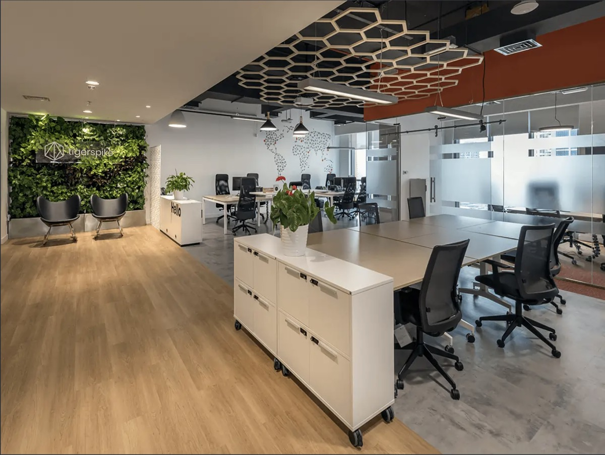
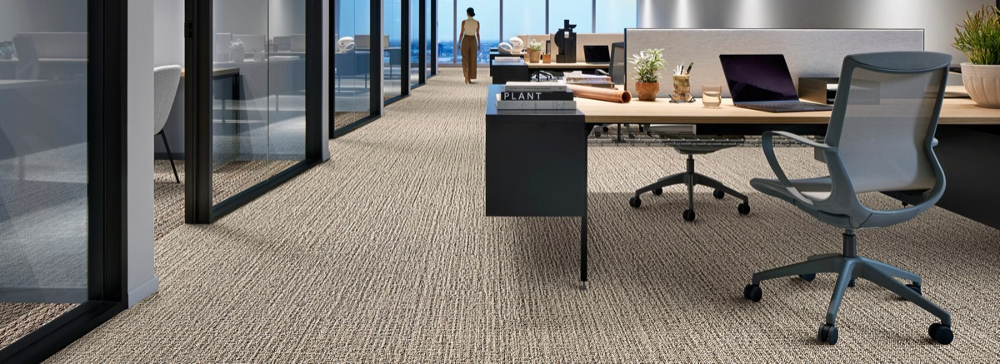
- 連工帶料：約 NT$2,500–5,000／坪
- 市場實際報價案例：約 NT$1,350／坪
- 全辦公室（600 坪）估算：約 NT$81 萬–300 萬
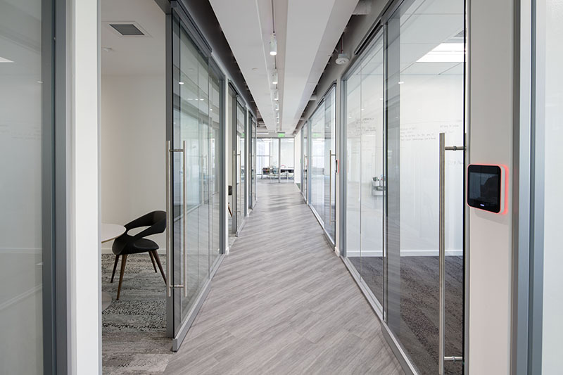
木紋與石紋地板的每坪行情依材質、廠牌與施工方式差異較大，建議依現場需求另洽廠商報價；地毯磚已有實際市場報價可參考。
牆面
統一重新粉刷為白色，維持簡潔明亮的視覺基調。
- 牆面粉刷：約 NT$900–1,600／坪
- 全辦公室（600 坪）估算：約 NT$54 萬–96 萬
天花板
天花板可從以下兩個方向調整，兩者都以白色／淺色為主：
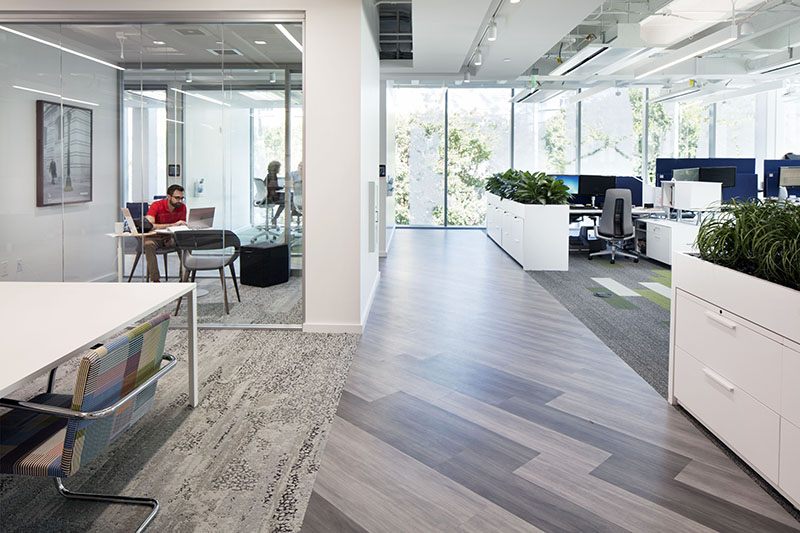
實際做法需視樓板淨高、消防灑水頭與空調風管位置而定，建議會同室內裝修與消防技師現場評估；成本依做法差異極大，未列入估算金額。
燈光
天花板改為白色（尤其是外露式天花板刷白）之後，燈光的搭配方式會直接影響空間觀感 —— 白色天花板能有效反射間接照明，讓整體光線更柔和均勻，也是大型企業辦公空間常見的做法：
- 色溫：建議 4000K 中性白光（範圍 3500–5000K），比純白光更接近日光，有助保持專注與清醒；避免過黃（偏居家感）或過冷（刺眼）。
- 照度：一般辦公桌面建議 300–500 lux —— 電腦作業約 300 lux 已足夠，紙本閱讀等高專注工作可到 500 lux；並非越亮越好，過亮反而會增加螢幕反光與眩光。
- 演色性（CRI）：建議 CRI ≥ 80，讓人臉與物品色彩看起來自然，避免傳統日光燈管常見的偏色感。
- 燈具與天花板搭配：外露式天花板刷白後，適合搭配懸吊式線型 LED，部分光線朝上間接打在天花板上反射回來，比傳統嵌燈更柔和、眩光更低；平釘天花板則可用嵌燈或面板燈，搭配走道線槽補強動線照明。
- 分層照明：走道與公共區域用整體照明（ambient），每張辦公桌加裝可調式檯燈作為任務照明（task lighting），會議室與洽談艙則獨立控光，依使用情境調整亮度。
- 自然光：靠窗區域搭配日光感應調光，白天可減少人工照明用電，也讓靠窗與內側區域的光線落差不會太大。
色溫、照度、演色性建議參考 IES（北美照明工程學會）辦公空間照明準則整理；實際燈具選型與迴路設計建議另洽電機技師與室內裝修承包商。
辦公桌椅（全面汰換，230 組）
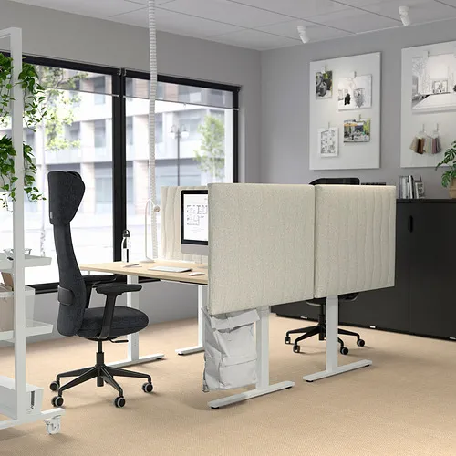
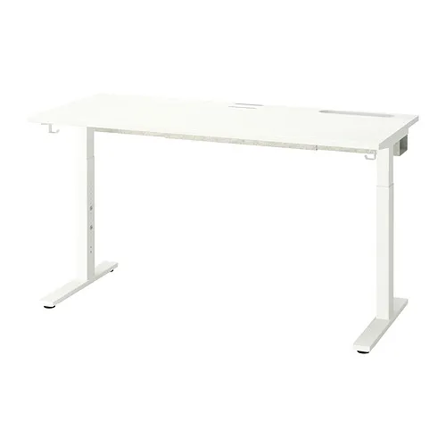
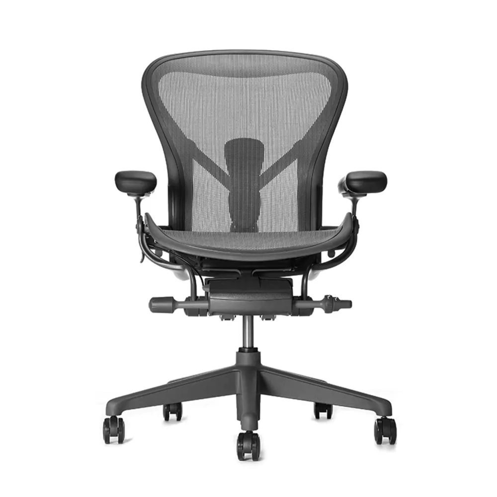
- 230 組（固定桌＋Aeron 促銷椅價）：230 × (NT$4,999＋NT$26,000) = 約 NT$713 萬
- 230 組（電動升降桌＋Aeron 促銷椅價）：230 × (NT$9,399＋NT$26,000) = 約 NT$814 萬
- 全面改電動升降桌的加價：約 NT$101 萬 —— 可依樓層或需求混合採購以控制預算
洽談空間：以洽談艙取代大量會議室
公司內部會議多數只有 2 人，也有不少人其實只是需要一個安靜空間講電話、開視訊， 卻因此佔用一整間會議室。與其新增大量正式會議室， 建議改以每層樓增設 2–3 座洽談艙／電話亭作為主要解法 —— 建置成本較低、彈性高，能立即紓解會議室不足的問題；既有 9 間會議室則保留給人數較多的會議或面談使用。
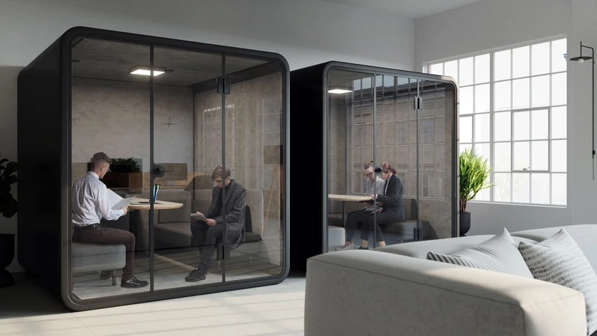
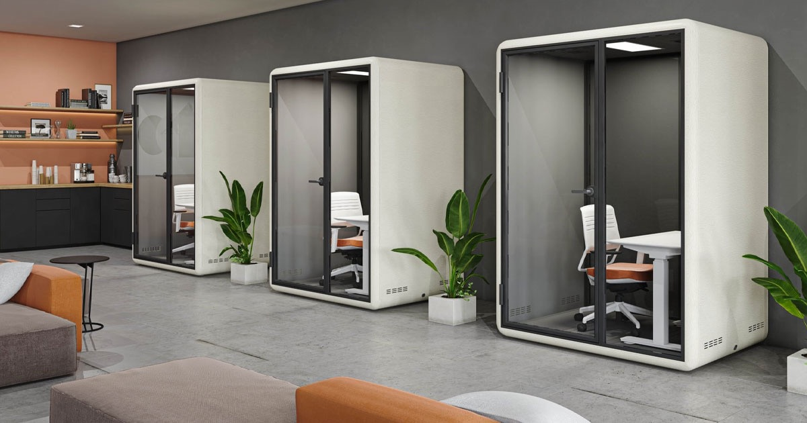
| 廠牌 | 規格 | 價格 |
|---|---|---|
| 空間特工 CiaZhan | 1 人，90×90×210 cm | 約 NT$142,000 |
| 空間特工 CiaZhan | 2 人 | 約 NT$190,000 |
| SQ 極度制噪（台灣製） | S／M／L | 約 NT$149,000–237,000 |
| Nobius（歐凌辦公家具） | 1／2 人 | 需另洽報價 |
若仍需增建正式會議室（如下圖的傳統玻璃會議室），成本涉及隔間、玻璃帷幕與空調管線調整， 建議另洽室內裝修承包商依現場報價。
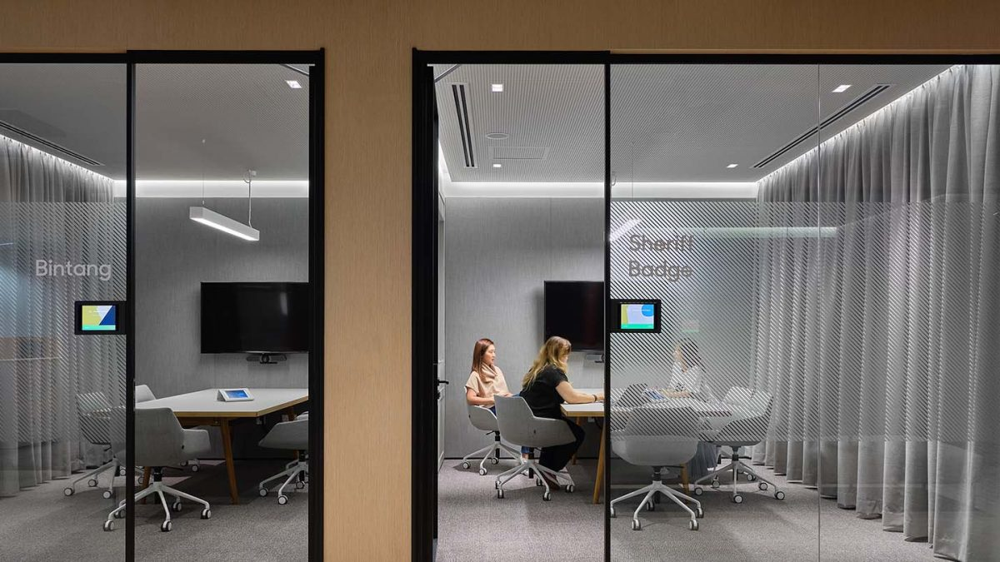
洗手間
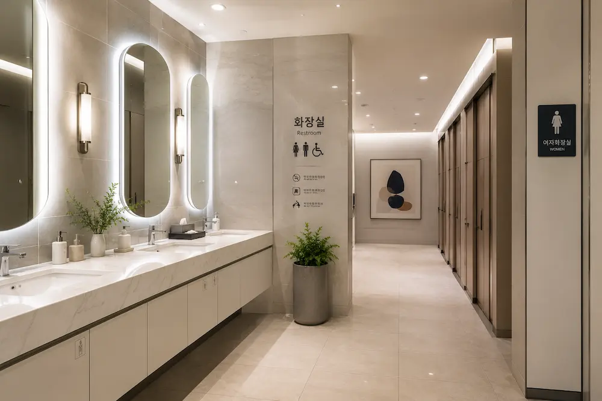
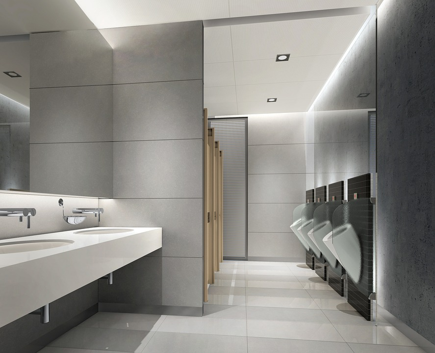
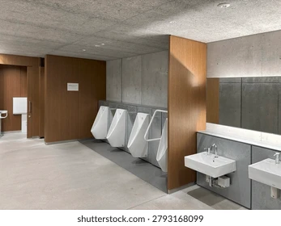
方向：木紋與石材／水磨石飾面搭配間接照明，比照近年商辦公共空間翻新案例的簡約風格。
未查得台灣商辦洗手間翻新的具體每坪行情，建議另洽室內裝修承包商依現場管線與坪數報價。
交誼／休憩區
如果大家永遠只在自己的座位上休息，就只會認識鄰近座位的同事。 辦公室裡有一個讓大家可以隨意聚在一起的空間，才有機會認識到其他部門、其他樓層的人 —— 跨部門的偶遇與交流是激發創意的重要來源，也是「讓人想來上班的辦公室」和「純機能辦公室」的差別所在。
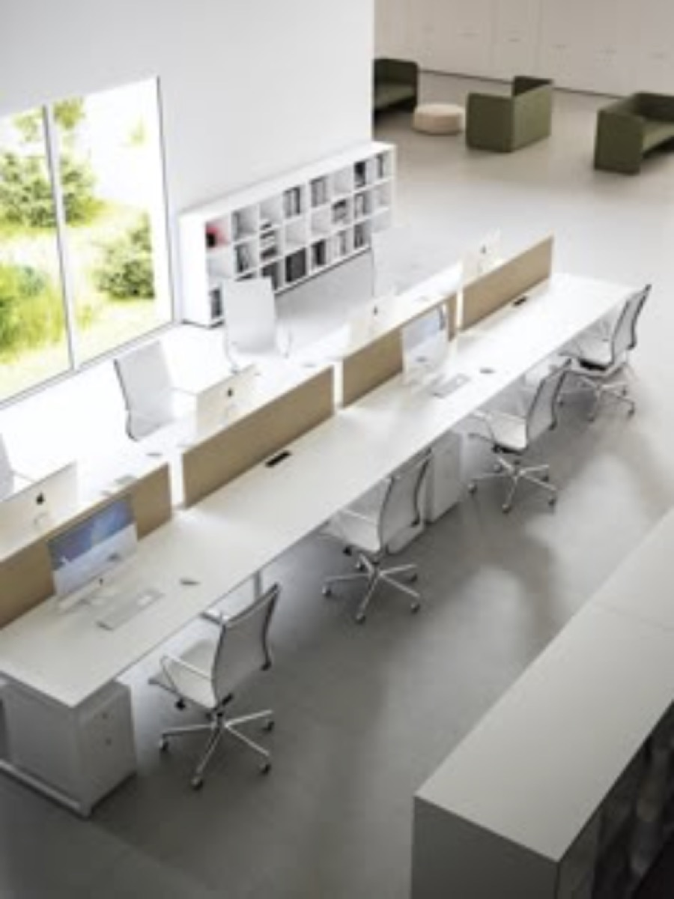
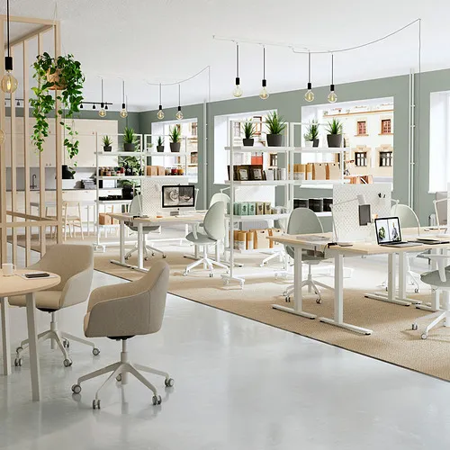
方向：軟性沙發座位搭配開放式討論區，作為會議室之外的非正式交流空間。